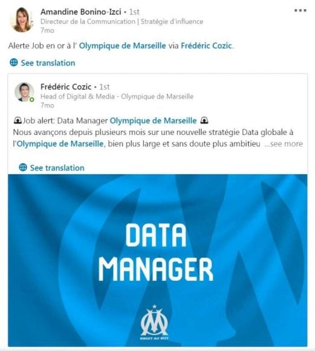

Aggrandir son réseau !
Linkedin ne fonctionne pas en amis mais avec un "réseau" vous indiquant également dans quel cercle de connaissance se situe les utilisateurs.
Le réseau social professionnel qui vous permet de rester ouvert au opportunitée.
Linkedin ne fonctionne pas en amis mais avec un "réseau" vous indiquant également dans quel cercle de connaissance se situe les utilisateurs.
C'est autant utile pour un employé, que pour un employeur !
Vous resterez a l'affut des opportunitée qui peuvent s'offir à vous.
